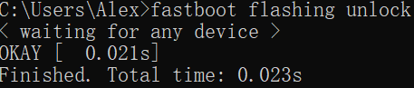
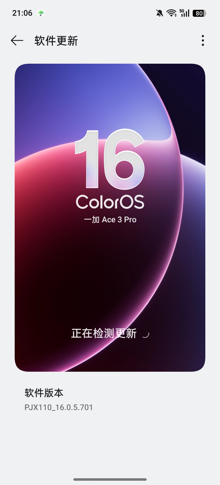
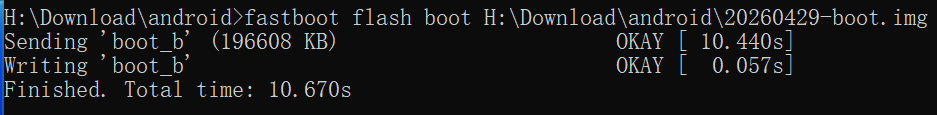
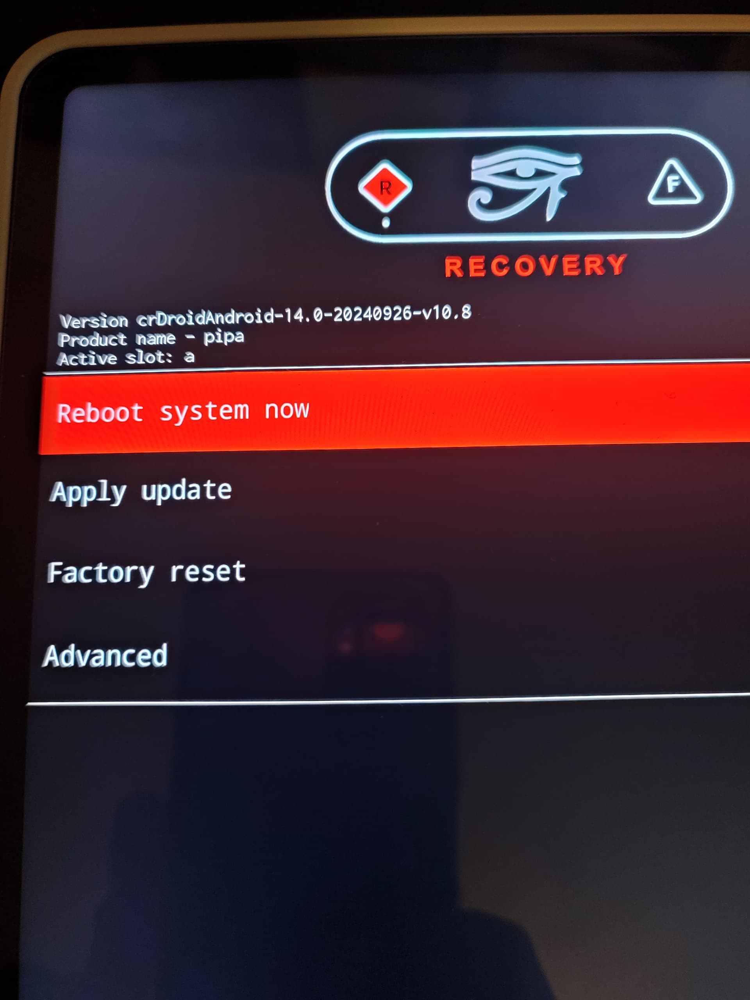

<meta data-alternate="https://freshmark.sunisalex.org/en/posts/android/PJX110-crdroid/" data-article="true" data-canonical="https://freshmark.sunisalex.org/posts/android/PJX110-crdroid/" data-description="[!WARNING] 以下教程仅供 一加Ace3Pro 安装crDroid 12(corvette)使用 玩机不规范,亲人两行泪 由操作不当造成的硬件损坏,请读者自负!" data-freshmark-page data-title="一加Ace3Pro安装crDroid — Freshmark"><main><header class="container article-header"><a href="/" class="back-link">← 返回全部文章</a><p class="eyebrow article-subject">Android</p><h1>一加Ace3Pro安装crDroid</h1><p class="article-dek">[!WARNING] 以下教程仅供 一加Ace3Pro 安装crDroid 12(corvette)使用 玩机不规范,亲人两行泪 由操作不当造成的硬件损坏,请读者自负!</p><div class="article-meta"><time datetime="2026-05-03">2026年5月3日</time><span>3 分钟阅读</span><span>刷机 · crDroid · ROM</span><span class="view-count" data-article-view-count hidden>本文访问量 <strong data-article-views></strong></span><a href="index.md" download>下载 Markdown</a><button type="button" class="article-share" data-share-article data-share-text="[!WARNING] 以下教程仅供 一加Ace3Pro 安装crDroid 12(corvette)使用 玩机不规范,亲人两行泪 由操作不当造成的硬件损坏,请读者自负!" data-share-title="一加Ace3Pro安装crDroid"><span data-share-label>分享文章</span></button><output aria-live="polite" class="visually-hidden" data-share-status role="status"></output></div></header><div class="article-wrap"><aside class="toc"><div class="toc-head"><p>本文目录</p><button type="button" class="toc-toggle" aria-expanded="false" aria-label="展开或收起目录" data-toc-toggle><span class="toc-toggle-label">目录</span><span class="toc-toggle-icon" aria-hidden="true"></span></button></div><nav aria-label="目录" class="toc-links" data-toc-links><a href="#操作准备" class="toc-level-2">操作准备</a><a href="#安装步骤" class="toc-level-2">安装步骤</a><a href="#底包c16" class="toc-level-3">底包(C16)</a><a href="#recovery" class="toc-level-3">recovery</a><a href="#crdroid" class="toc-level-3">crDroid</a><a href="#结语" class="toc-level-2">结语</a></nav></aside><article class="prose"><blockquote><p>[!WARNING] 以下教程仅供<strong>一加Ace3Pro</strong>安装crDroid 12(corvette)使用</p><p><strong>玩机不规范,亲人两行泪</strong></p><p>由操作不当造成的硬件损坏,请读者自负!</p></blockquote><!--more--><p>本篇教程参考了<a href="https://crdroid.net/corvette/12/install">crDroid官网教程</a></p><h2 id="操作准备">操作准备</h2><ol><li>一加Ace3Pro(已解锁BL且安装ColorOS16)+电脑+原厂数据线</li><li>下载以下文件 {{&lt; file-tree &gt;}}</li></ol><ul><li>name: crdroid.zip type: file comment: Download the latest ROM file</li><li>name: recovery/ type: dir children:<ul><li>name: boot.img type: file</li><li>name: dtbo.img type: file</li><li>name: init_boot.img type: file</li><li>name: vbmeta.img type: file</li><li>name: vendor_boot.img type: file</li><li>name: recovery.img type: file</li></ul></li><li>name: nikgapps.zip type: file comment: Download the latest GApps {{&lt; /file-tree &gt;}}</li></ul><p>以上文件(不包含<a href="https://nikgapps.com/crdroid-official">gapps</a>)可以在<a href="https://sourceforge.net/projects/crdroid/files/corvette/12.x/">sourceforge</a>下载</p><p>下载之后目录如下图(本文使用当时的最新版本)</p><p>{{&lt; file-tree &gt;}}</p><ul><li>name: 20260429-boot.img type: file</li><li>name: 20260429-dtbo.img type: file</li><li>name: 20260429-init_boot.img type: file</li><li>name: 20260429-recovery.img type: file</li><li>name: 20260429-vbmeta.img type: file</li><li>name: 20260429-vendor_boot.img type: file</li><li>name: crDroidAndroid-16.0-20260429-corvette-v12.9.zip type: file</li><li>name: NikGapps-crdroid-official-arm64-16-20260223-signed.zip type: file {{&lt; /file-tree &gt;}}</li></ul><p>如果没有解锁bootloader,可以在CMD里如下操作:</p><pre><code>adb reboot bootloader
fastboot flashing unlock
</code></pre><p>注意解锁会清除所有数据.</p><p>成功效果如图:</p><p><picture class="responsive-picture"><source srcset="fastboot_flashing_unlock.freshmark-2a4f8697d92a-457w.avif 457w" type="image/avif"><source srcset="fastboot_flashing_unlock.freshmark-2a4f8697d92a-457w.webp 457w" type="image/webp"></picture><picture class="responsive-picture"><source srcset="unlock_bootloader.freshmark-7fc9bbaaf2b3-480w.avif 480w, unlock_bootloader.freshmark-7fc9bbaaf2b3-960w.avif 960w, unlock_bootloader.freshmark-7fc9bbaaf2b3-1440w.avif 1440w" type="image/avif"><source srcset="unlock_bootloader.freshmark-7fc9bbaaf2b3-480w.webp 480w, unlock_bootloader.freshmark-7fc9bbaaf2b3-960w.webp 960w, unlock_bootloader.freshmark-7fc9bbaaf2b3-1440w.webp 1440w" type="image/webp"></picture></p><h2 id="安装步骤">安装步骤</h2><h3 id="底包c16">底包(C16)</h3><p>首先查看所需要的底包(理论上Android 16,即ColorOS16都可以)</p><p>但是(firmware)最好和crDroid构建时的底层版本一致.</p><p>在GitHub上查看<a href="https://github.com/crdroidandroid/android_device_oneplus_corvette/blob/16.0/proprietary-files.txt#L2">专有文件列表</a>前两行</p><pre><code>## All proprietary files from this list, unless pinned and noted otherwise,
## are from OnePlus Ace 3 Pro (PJX110_16.0.5.701(CN01)).
</code></pre><p>遂下载对应版本的ColorOS(701)</p><p>在<a href="https://op-rom.lian86.top/#/brand/OnePlus/model/%E4%B8%80%E5%8A%A0%20Ace%203%20Pro">OPlus 收集站</a>可以解析任意版本的系统全量包链接.</p><p>对于ColorOS PJX110_16.0.5.701(CN01),其链接为:</p><p><a href="https://gauss-compota-c-cn.allawnfs.com/remove-a39fc75063832d557a24f7ab02a02380/g-0e1e77d02e7bdea2328fda27ff230743/component-ota/26/04/14/faba2a6afc834843855599af7be64cf5.zip?sign=a0c55ee3494086f0981d65e678b94665&amp;t=69f71e0a&amp;AWSAccessKeyId=ayjy7KyLVHvDqDax6_KqJgtBeORTJARg9MSGiL66&amp;Expires=1777804562&amp;Signature=1dpWvcI4eyGiQT7obLfw2t91l54%3D">https://gauss-compota-c-cn.allawnfs.com/remove-a39fc75063832d557a24f7ab02a02380/g-0e1e77d02e7bdea2328fda27ff230743/component-ota/26/04/14/faba2a6afc834843855599af7be64cf5.zip?sign=a0c55ee3494086f0981d65e678b94665&amp;t=69f71e0a&amp;AWSAccessKeyId=ayjy7KyLVHvDqDax6_KqJgtBeORTJARg9MSGiL66&amp;Expires=1777804562&amp;Signature=1dpWvcI4eyGiQT7obLfw2t91l54%3D</a></p><p>在应用管理中清除软件升级数据,然后断网即可在系统更新里手动安装全量包.</p><p><picture class="responsive-picture"><source srcset="Screenshot_2026-05-02-19-36-28-06_fc704e6b13c4fb26bf5e411f75da84f2.freshmark-c43792d30f1b-480w.avif 480w, Screenshot_2026-05-02-19-36-28-06_fc704e6b13c4fb26bf5e411f75da84f2.freshmark-c43792d30f1b-960w.avif 960w, Screenshot_2026-05-02-19-36-28-06_fc704e6b13c4fb26bf5e411f75da84f2.freshmark-c43792d30f1b-1080w.avif 1080w" type="image/avif"><source srcset="Screenshot_2026-05-02-19-36-28-06_fc704e6b13c4fb26bf5e411f75da84f2.freshmark-c43792d30f1b-480w.webp 480w, Screenshot_2026-05-02-19-36-28-06_fc704e6b13c4fb26bf5e411f75da84f2.freshmark-c43792d30f1b-960w.webp 960w, Screenshot_2026-05-02-19-36-28-06_fc704e6b13c4fb26bf5e411f75da84f2.freshmark-c43792d30f1b-1080w.webp 1080w" type="image/webp"></picture></p><p><picture class="responsive-picture"><source srcset="Screenshot_2026-05-02-21-06-36-51_9492aa3750dca76abb7c25b39a5f1e8e.freshmark-b92311cd9ed4-480w.avif 480w, Screenshot_2026-05-02-21-06-36-51_9492aa3750dca76abb7c25b39a5f1e8e.freshmark-b92311cd9ed4-960w.avif 960w, Screenshot_2026-05-02-21-06-36-51_9492aa3750dca76abb7c25b39a5f1e8e.freshmark-b92311cd9ed4-1080w.avif 1080w" type="image/avif"><source srcset="Screenshot_2026-05-02-21-06-36-51_9492aa3750dca76abb7c25b39a5f1e8e.freshmark-b92311cd9ed4-480w.webp 480w, Screenshot_2026-05-02-21-06-36-51_9492aa3750dca76abb7c25b39a5f1e8e.freshmark-b92311cd9ed4-960w.webp 960w, Screenshot_2026-05-02-21-06-36-51_9492aa3750dca76abb7c25b39a5f1e8e.freshmark-b92311cd9ed4-1080w.webp 1080w" type="image/webp"></picture></p><h3 id="recovery">recovery</h3><pre><code>fastboot flash boot boot.img
fastboot flash dtbo dtbo.img
fastboot flash init_boot init_boot.img
fastboot flash vbmeta vbmeta.img
fastboot flash vendor_boot vendor_boot.img
fastboot flash recovery recovery.img
</code></pre><figure class="prose-figure"><picture class="responsive-picture"><source srcset="Snipaste_2026-05-03_18-28-18.freshmark-7d0a3ce6dd42-480w.avif 480w, Snipaste_2026-05-03_18-28-18.freshmark-7d0a3ce6dd42-937w.avif 937w" type="image/avif"><source srcset="Snipaste_2026-05-03_18-28-18.freshmark-7d0a3ce6dd42-480w.webp 480w, Snipaste_2026-05-03_18-28-18.freshmark-7d0a3ce6dd42-937w.webp 937w" type="image/webp"></picture><figcaption>参考图</figcaption></figure><p>成功刷入REC及其底层后,由bootloader进入recovery</p><pre><code>fastboot reboot recovery
</code></pre><h3 id="crdroid">crDroid</h3><table><thead><tr><th>方式</th><th>介质</th><th>是否需要电脑</th><th>典型操作</th></tr></thead><tbody><tr><td>线刷</td><td>USB 数据线</td><td>✅ 需要</td><td>fastboot flash/adb sideload</td></tr><tr><td>卡刷</td><td>SD 卡 / 本地存储</td><td>❌ 不需要</td><td>在 Recovery 中选择本地 zip 包刷入</td></tr></tbody></table><p>这里我们采取sideload线刷(REC环境).</p><p><picture class="responsive-picture"><source srcset="crDroid-recovery.freshmark-78deb72819a8-480w.avif 480w, crDroid-recovery.freshmark-78deb72819a8-960w.avif 960w, crDroid-recovery.freshmark-78deb72819a8-1440w.avif 1440w" type="image/avif"><source srcset="crDroid-recovery.freshmark-78deb72819a8-480w.webp 480w, crDroid-recovery.freshmark-78deb72819a8-960w.webp 960w, crDroid-recovery.freshmark-78deb72819a8-1440w.webp 1440w" type="image/webp"></picture>用 音量键+电源键 选择<strong>Factory Reset</strong> &gt; <strong>Format data</strong></p><p>然后回到主菜单,选择<strong>Apply update</strong></p><pre><code>adb sideload crDroid.zip
</code></pre><p>这里简单科普一下sideload原理:</p><table><thead><tr><th>方式</th><th>是否落盘</th><th>流程</th></tr></thead><tbody><tr><td>卡刷（本地 zip）</td><td>✅ 完整文件已在设备上</td><td>读取 → 校验 → 解压安装</td></tr><tr><td>adb sideload</td><td>❌ 不完整落盘</td><td>流式传输 + 同步校验安装</td></tr><tr><td>fastboot flash</td><td>❌</td><td>直接写入对应分区，无&quot;安装&quot;概念</td></tr></tbody></table><p>安装到一半,REC会询问是否进行额外安装(reboot in recovery again for installing additional packages),请根据实际情况选择.</p><p>{{&lt; tabs &gt;}} {{% tab title=&quot;安装gapps&quot; %}}<code>adb sideload gapps.zip</code></p><p><picture class="responsive-picture"><source srcset="Snipaste_2026-05-03_18-28-32.freshmark-951d4b011ed4-480w.avif 480w, Snipaste_2026-05-03_18-28-32.freshmark-951d4b011ed4-960w.avif 960w, Snipaste_2026-05-03_18-28-32.freshmark-951d4b011ed4-1108w.avif 1108w" type="image/avif"><source srcset="Snipaste_2026-05-03_18-28-32.freshmark-951d4b011ed4-480w.webp 480w, Snipaste_2026-05-03_18-28-32.freshmark-951d4b011ed4-960w.webp 960w, Snipaste_2026-05-03_18-28-32.freshmark-951d4b011ed4-1108w.webp 1108w" type="image/webp"></picture>{{% /tab %}} {{% tab title=&quot;不安装gapps&quot; %}}继续安装<picture class="responsive-picture"><source srcset="image.freshmark-a71c4b3303ac-480w.avif 480w, image.freshmark-a71c4b3303ac-960w.avif 960w, image.freshmark-a71c4b3303ac-1005w.avif 1005w" type="image/avif"><source srcset="image.freshmark-a71c4b3303ac-480w.webp 480w, image.freshmark-a71c4b3303ac-960w.webp 960w, image.freshmark-a71c4b3303ac-1005w.webp 1005w" type="image/webp"></picture>{{% /tab %}} {{&lt; /tabs &gt;}}</p><p>Total xfer(Total transfer)是<strong>总传输倍率</strong>，表示实际传输的数据量与原始包大小的比值,如果没有出错应该等于1,大于1说明数据出错,进行了重传。</p><p>最后,crDroid安装完成,重启即可.</p><h2 id="结语">结语</h2><p>在厂商 ROM 日趋完善的今天，ColorOS 的流畅、MIUI(HyperOS) 的生态、甚至各家&quot;AI 系统&quot;的种种噱头， 早已将智能手机打磨得无懈可击——至少表面上如此。</p><p>那我们为什么还要费尽周折，刷一个看起来&quot;简陋&quot;的类原生 ROM？</p><p>答案或许很简单：<strong>我们不在乎手机里塞了多少用不到的功能，我们在乎的是这台手机究竟听谁的。</strong></p><p>没有云控，没有静默推送，没有哪个进程在后台悄悄做着你不知道的事。 你的设备，运行着你选择的系统，只为你服务。</p><p>这种掌控感，是任何一套&quot;智慧生活&quot;或&quot;AI 调度&quot;都换不来的。</p><p>自由、隐私、开放——从来不是开箱即用的功能，而是你亲手刷进去的。</p></article></div><section class="container comments" data-comments data-comments-path="/posts/android/PJX110-crdroid/"><div class="comments-head"><div><p class="eyebrow">评论</p><h2 data-comments-title>评论</h2></div><p>登录后参与讨论。注册时只需验证一次邮箱。</p></div><div class="comment-list" aria-live="polite" data-comment-list><p class="comment-state" data-comment-state>正在加载评论…</p></div><button type="button" class="comment-more" data-comments-more hidden>加载更早的评论</button><div class="comment-auth" data-comment-auth><p class="comment-auth-status" data-auth-loading>正在检查登录状态…</p><div hidden data-auth-guest><form class="comment-auth-form" data-auth-login><h3>登录后评论</h3><label>邮箱<input autocomplete="email" name="email" maxlength="254" required type="email"></label><label>密码<input autocomplete="current-password" name="password" maxlength="128" required type="password"></label><div class="comment-form-foot"><p class="comment-form-status" role="status" data-auth-login-status></p><button type="submit">登录</button></div></form><details class="comment-register"><summary>还没有账号？注册</summary><form class="comment-auth-form" data-auth-register><label>昵称<input autocomplete="name" name="name" maxlength="40" required></label><label>邮箱<input autocomplete="email" name="email" maxlength="254" required type="email"></label><label>密码<input autocomplete="new-password" name="password" maxlength="128" required type="password" minlength="8"></label><p class="comment-auth-hint">至少 8 个字符。</p><div class="comment-form-foot"><p class="comment-form-status" role="status" data-auth-register-status></p><button type="submit">注册</button></div></form></details></div><form class="comment-auth-form" hidden data-auth-verify><p>验证码已发送到邮箱，请在 10 分钟内完成注册。</p><label>六位验证码<input autocomplete="one-time-code" name="code" maxlength="6" required minlength="6" inputmode="numeric" pattern="[0-9]{6}"></label><div class="comment-form-foot"><p class="comment-form-status" role="status" data-auth-verify-status></p><button type="submit">完成注册</button></div></form><div class="comment-auth-user" data-auth-user hidden><p>当前登录： <strong data-auth-user-name></strong> <span data-auth-user-email></span></p><button type="button" data-auth-logout>退出登录</button></div></div><form class="comment-form" hidden data-comment-form><label>评论内容<textarea maxlength="2000" minlength="2" name="body" placeholder="写下你的想法…" required rows="5"></textarea></label><p class="comment-markdown-hint">支持 Markdown：加粗、链接、引用、列表和代码。</p><label aria-hidden="true" class="comment-honeypot">Website<input autocomplete="off" name="website" tabindex="-1"></label><div class="comment-form-foot"><p class="comment-form-status" role="status" data-comment-form-status></p><button type="submit" data-comment-submit>发表评论</button></div></form></section></main>